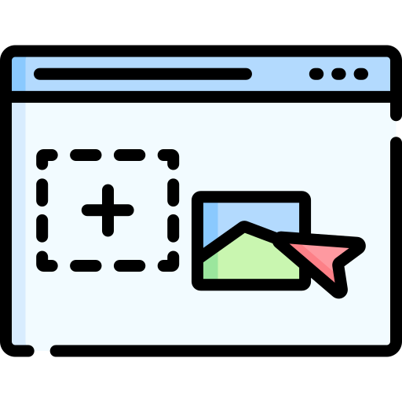
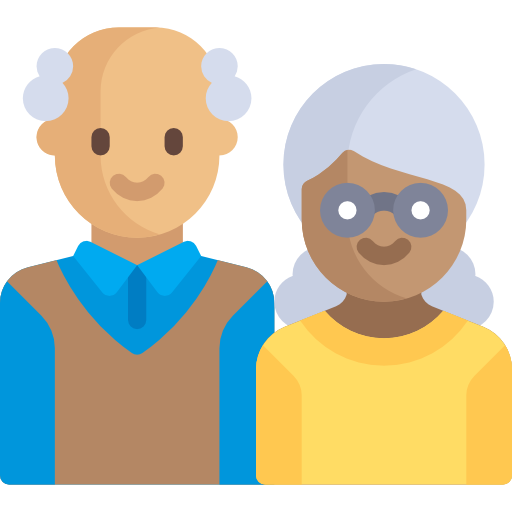

디지털 정보
실태,
어디까지 알고 계세요?

png from , thanks to FLATICON
이 사이트는 상업용이 아닌 학습 목적으로 만들어진 사이트입니다.
This site is intended for educational purposes and not for commercial use.
75세 이상의 스마트폰 사용률은
40% 미만이다.
65세 이상 어르신들 중
컴퓨터의 파일을 드래그 앤 드랍할 수 있는 분들은
10% 이하이다.

혼자 거주하시는 어르신들 중 문자를 사용할 수 있는 어르신은
50% 이하이다.

우리나라 성인들의 스마트폰 사용률은
5년동안
40% 이상 증가했다.

스마트폰으로 나이를 입력하면 받을 수 있는 복지 혜택을 확인할 수 있는 복지 서비스의 이름은?

노인 돌봄 개발 업체, 전자동 변기, 몸이 불편한 노인을 돕는 장치처럼
나이가 많은 사람을 위한 기술을 통칭하는 말은?

주민센터에서 모바일 기차 예매법, 키오스크 메뉴를 주문법 등을 교육하는 정책의 이름은?
스마트폰을 과도하게 사용해서
스마트폰 중독에 걸린 청소년의 비율은?

나는 얼마나 잘 알고 있을까?

당신의 점수는 ?
0점
아쉽네요 😓

조금 아쉬운 점수네요!
전자 기기를 사용하면서 얻는 편리함과 동시에,
디지털 소외 계층이 겪을 불편함에 대해 생각해보는 시간을 가져보도록 해요!
당신의 점수는 ?
13점
조금씩 알아가봐요 😓
조금 아쉬운 점수네요!
전자 기기를 사용하면서 얻는 편리함과 동시에,
디지털 소외 계층이 겪을 불편함에 대해 생각해보는 시간을 가져보도록 해요!
당신의 점수는 ?
26점
조금 더 공부해봐요 😬
조금 아쉬운 점수네요!
전자 기기를 사용하면서 얻는 편리함과 동시에,
디지털 소외 계층이 겪을 불편함에 대해 생각해보는 시간을 가져보도록 해요!
당신의 점수는 ?
38점
조금만 더 관심을 가져봅시다 ! 🤓
조금 아쉬운 점수네요!
전자 기기를 사용하면서 얻는 편리함과 동시에,
디지털 소외 계층이 겪을 불편함에 대해 생각해보는 시간을 가져보도록 해요!
당신의 점수는 ?
50점
노력하면 더 잘할 수 있어요! 💪
기본적인 지식이 탄탄하시네요
전자 기기를 사용하면서 얻는 편리함과 동시에,
디지털 소외 계층이 겪을 불편함에 대해 생각해보는 시간을 가져보도록 해요!
당신의 점수는 ?
62점
이 분야에 관심이 있으시네요 😮
기본적인 지식이 탄탄하시네요
앞으로도 전자 기기를 사용하면서 얻는 편리함과 동시에,
디지털 소외 계층이 겪을 불편함에 대해 생각해보는 시간을 가져보도록 해요!
당신의 점수는 ?
75점
이 분야에 관심이 많으시네요 😮
기본적인 지식이 탄탄하시네요
앞으로도 전자 기기를 사용하면서 얻는 편리함과 동시에,
디지털 소외 계층이 겪을 불편함에 대해 생각해보는 시간을 가져보도록 해요!
당신의 점수는 ?
87점
관련 소식을 빠르게 접하셨군요! 😍
기본적인 지식이 탄탄하시네요
앞으로도 전자 기기를 사용하면서 얻는 편리함과 동시에,
디지털 소외 계층이 겪을 불편함에 대해 생각해보는 시간을 가져보도록 해요!
당신의 점수는 ?
100점
와우 혹시 전공자이신가요? 🥳💗
대단합니다. 완벽한 지식을 갖고 계시는군요.
앞으로도 지금처럼 디지털 소외 계층에 대해 생각해보는 시간을 가져봐요!